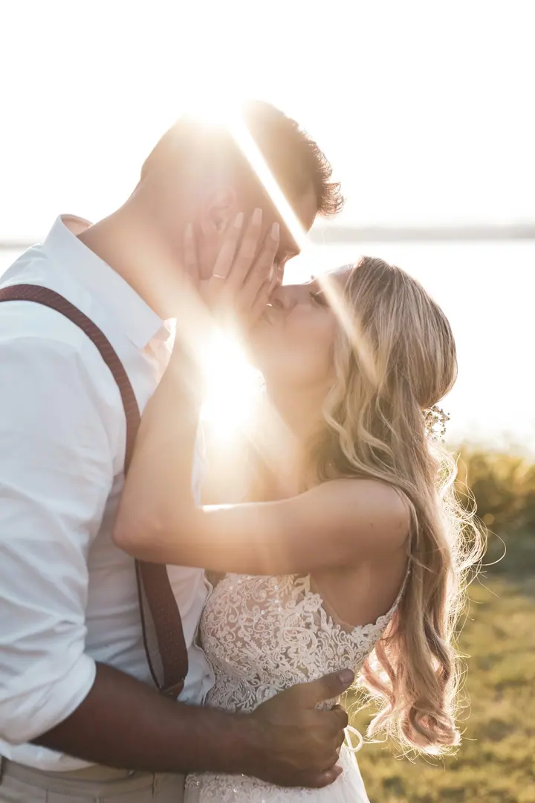
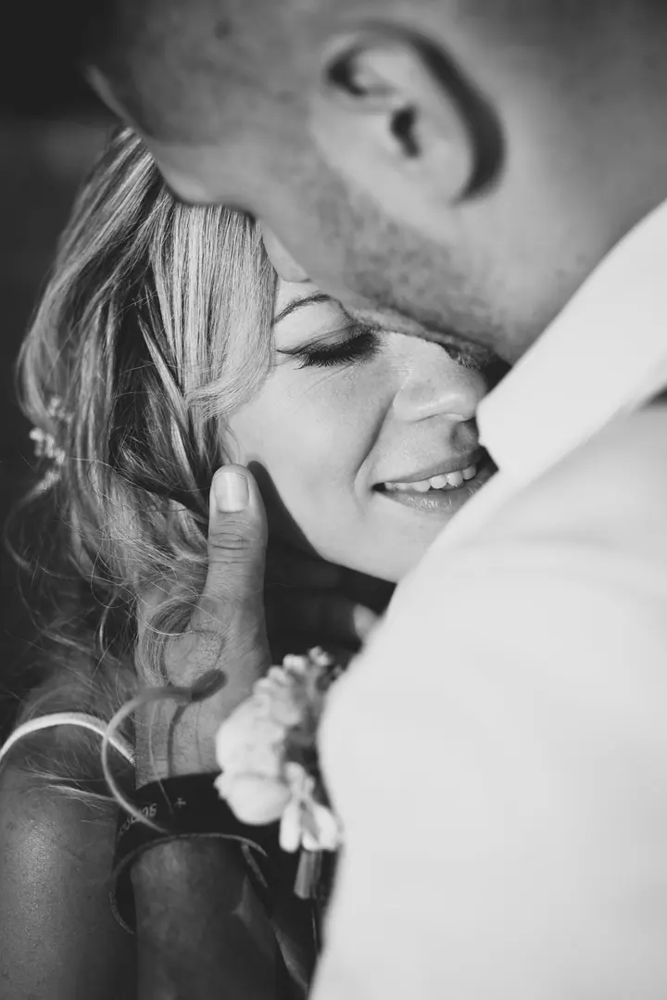
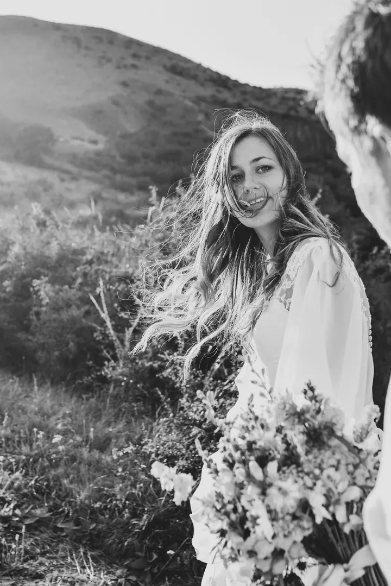
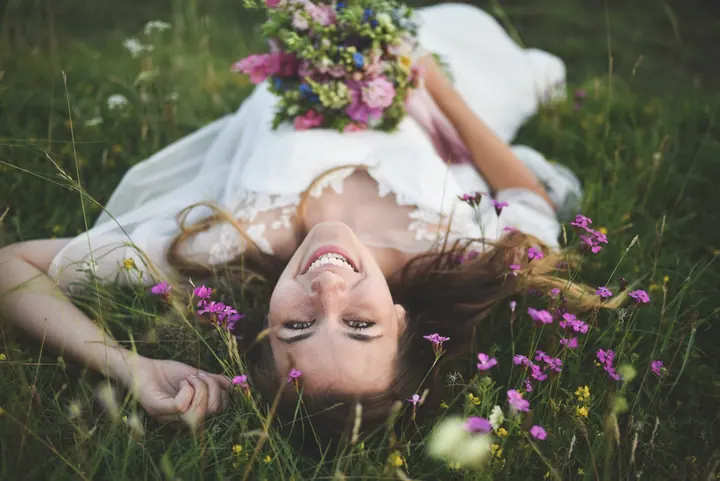

jedna
Svatby
Fotím přirozeně, citlivě a nenápadně, aby na fotkách byla cítit atmosféra Vašeho dne. Před svatbou si důkladně vyslechnu Vaše představy a společně vymyslíme, jak Váš den zachytit.

Svatební fotografka · Louny, Česká republika, zahraničí

Jmenuji se Lada Turbachová-Baladová a jsem svatební fotografka z Loun. Nejlepší fotky podle mě vznikají v uvolněné atmosféře, proto pracuji citlivě a nenápadně. Ze snímků pak cítíte úsměvy, letmé pohledy i slzy štěstí.
Více o mně
Co fotím
jedna
Fotím přirozeně, citlivě a nenápadně, aby na fotkách byla cítit atmosféra Vašeho dne. Před svatbou si důkladně vyslechnu Vaše představy a společně vymyslíme, jak Váš den zachytit.
dvě
Focení párů, portrétů a glamour fotografie v uvolněné atmosféře. Ven do přírody nebo do ateliéru v Lounech.
Focení novorozenců a jejich nejbližších, klidně i u Vás doma. Jemné fotky z prvních dnů, ke kterým se budete rádi vracet.
Fotím těhulky, rodiny i děti. Rodinné focení probíhá přirozeně a bez stresu, abychom si ho užili všichni.
Každá svatba je příběhem dvou srdcí

Za objektivem
Vystudovala jsem Pražskou fotografickou školu a profesionálně fotím od roku 2008. Za tu dobu mám za sebou tři stovky svateb v České republice i v zahraničí. Focení svateb mě pořád velice baví a chtěla bych, aby bavilo i Vás.
Každá svatba je jiná, a tak k ní i přistupuji. Ještě před Vaším dnem se můžeme potkat, probrat Vaše představy a společně vymyslet, jak nejlépe zachytit právě Vaši lásku. Mým cílem jsou uvolněné, nadčasové fotografie, které vyprávějí příběh.
Kromě svateb fotím také těhulky, novorozence, rodiny, děti, páry, portréty a glamour. Ateliér mám v Lounech na Pražské ulici. Miluji svou práci a věřím, že si ji se mnou užijete i Vy.
Lada
Napište mi přes formulář nebo zavolejte a domluvíme se, jestli mám na Váš termín volno.
Před svatbou se můžeme osobně potkat. Vyslechnu si Vaše představy a společně naplánujeme, jak den zachytit.
Fotím citlivě a nenápadně, abyste se mohli věnovat sobě a svým hostům. Na společné focení si najdeme klidné místo a dobré světlo.
Fotky pečlivě vyberu a upravím. Dostanete ucelený příběh Vašeho dne, ke kterému se budete rádi vracet.
Portfolio
Otázky
Ano. Svatby fotím po celé České republice i v zahraničí.
Určitě. Osobní setkání nebo konzultaci před svatbou ráda nabízím, abychom se poznali a probrali Vaše představy.
Přirozený a autentický, plný emocí. Nechci Vás aranžovat do strnulých póz, raději zachytím, jak se den opravdu odehrává.
Ano. Fotím také těhulky, novorozence, rodiny, děti, páry, portréty a glamour, a to venku i v ateliéru v Lounech.
Napište pár vět o tom, co si představujete. · +420 606 648 792